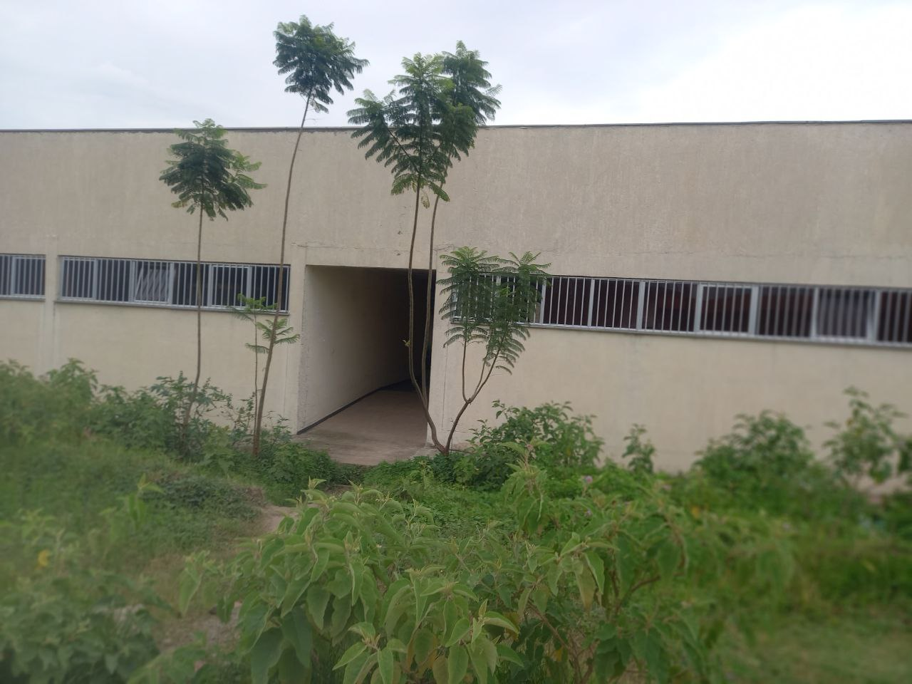

- Home page
- academics


Hawassa University is well-known for its commitment to providing quality education to its students. However, the university also recognizes the importance of promoting the health and well-being of its student population. To achieve this goal, Hawassa University has established a comprehensive health care service that caters to the healthcare needs of students. The health care service at Hawassa University is provided through a modern healthcare facility that is well-equipped to manage common health issues that students may experience. The facility has a dedicated team of licensed physicians, nurses and other health care professionals who are trained to provide a range of health services. One of the most important aspects of the health care service at Hawassa University is prevention. The University provides a range of health education programs that are designed to promote healthy living and prevent illness. The students are also provided with regular health screenings for common conditions such as hypertension, diabetes, and infectious diseases. To ensure that the students receive prompt medical attention and support in emergencies, the health care service at Hawassa University operates around the clock. The facility is equipped with an ambulance service that is available 24 hours a day, seven days a week. The ambulance service is fully equipped with medical equipment and staffed by trained medical professionals to provide immediate care and support to students in need. The health care service at Hawassa University is also committed to providing holistic care to its students. The healthcare professionals at the facility are trained to provide counseling services to students who may be struggling with mental health issues, such as stress, anxiety, and depression. In conclusion, the health care service at Hawassa University serves as an essential support system for students, providing them with access to quality healthcare that promotes their overall well-being. Through its commitment to prevention, timely care, and holistic support, Hawassa University is a model for other academic institutions seeking to prioritize the health and well-being of their student populations.